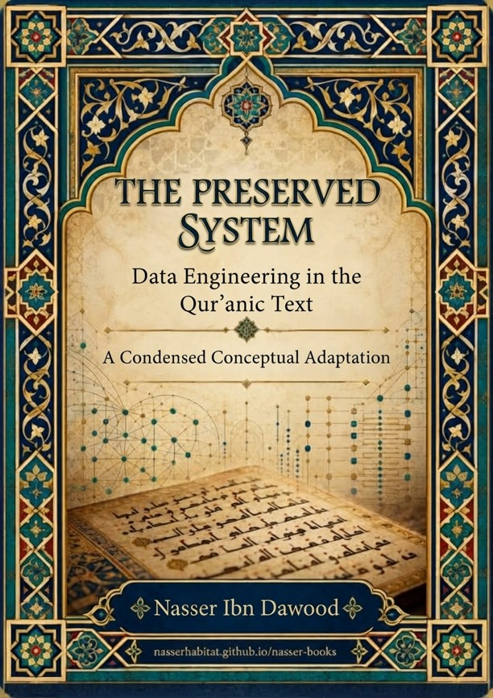

Nasser Ibn Dawood
Text extracted from the author-supplied Word edition; consult the original source.
Preparing the reader…
THE PRESERVED SYSTEM
Data Engineering in the Qur’anic Text
A Condensed Conceptual Adaptation
Nasser Ibn Dawood
nasserhabitat.github.io/nasser-books/
This edition presents the conceptual architecture of the Arabic original in accessible English.
I. The Global Knowledge Manifesto
Knowledge is a universal right. The author firmly believes that wisdom should not be locked behind paywalls or language barriers.
Global Access Policy: All books in this library are available for free in multiple digital formats (PDF, HTML, DOCX, TXT).
The Digital Library: As of early 2026, the collection hosts 68 volumes (34 in Arabic and 34 in English), fully optimized for AI-assisted research and digital archiving.
Official Platforms: Main Website: nasserhabitat.github.io/nasser-books/
GitHub: nasserhabitat/nasser-books
II. Translator’s Note: The Bridge of Meaning
This English edition is a condensed conceptual adaptation. It is not a word-for-word translation, but rather an "extraction of essence." It presents the core philosophical framework in accessible English, omitting the exhaustive linguistic debates and classical references found in the original Arabic text.
For the academic researcher: The original Arabic version remains the primary source for comprehensive linguistic analysis, detailed exegesis (Tafsir), and the complete bibliography.
Contents
Introduction — From Interpretation to an Operating System
1. Why a Systems Reading?
2. The QCROS Method: From Observation to Governed Claims
3. The Three-Layer Architecture: Kitāb, Qur’an, and Dhikr
4. The Kitāb as a Reference Layer
5. The Qur’an as a Dynamic Processing Layer
6. Dhikr as Preserved Guidance and Knowledge Output
7. How the System Processes Meaning
8. Mathānī: Meaning Through Relations
9. A Controlled Lexical Case Study: Zawj and Imra’ah
10. Sūrat al-Ḥijr as a Systems Demonstration
11. Tradition, External Data, and Epistemic Noise
12. The Reader as an Active Participant
13. QCROS Final Audit: Testing the System by the System
14. Reproducibility, Generalizability, and Scientific Humility
15. A Practical Protocol for Qur’anic Contemplation
Conclusion — From Authority of Results to Governance of the Path
Glossary of Core Terms
Introduction — From Interpretation to an Operating System
The central proposal of The Preserved System is simple to state but far-reaching in its consequences: the Qur’anic text should not be approached only as a sequence of isolated statements awaiting external explanation. It can also be studied as a highly structured field of relations in which words, passages, contrasts, recurrences, and internal references cooperate to produce meaning.
This approach does not deny history, philology, grammar, or the accumulated heritage of interpretation. Rather, it changes the order of operations. Before inherited explanations are allowed to govern a reading, the text is first observed as a corpus. Its recurring forms are collected, contexts are compared, differences are preserved, and hypotheses are tested against resistant cases. Interpretation therefore becomes less a matter of immediate impression and more a matter of traceable procedure.
The book’s governing shift is from “What does this word mean in isolation?” to “What function does this expression perform within the wider Qur’anic network?”
To make this shift visible, the book borrows selected concepts from systems theory and data engineering: baseline, processing, input, output, noise, validation, traceability, and reproducibility. These terms are methodological metaphors, not claims that revelation is literally a computer program. Their purpose is to make relationships explicit and testable.
The resulting framework is called QCROS in the Arabic work. This adaptation retains that label as the author’s technical name for the operating-and-observation protocol. Its ambition is not to manufacture certainty, but to discipline the path from text to claim.